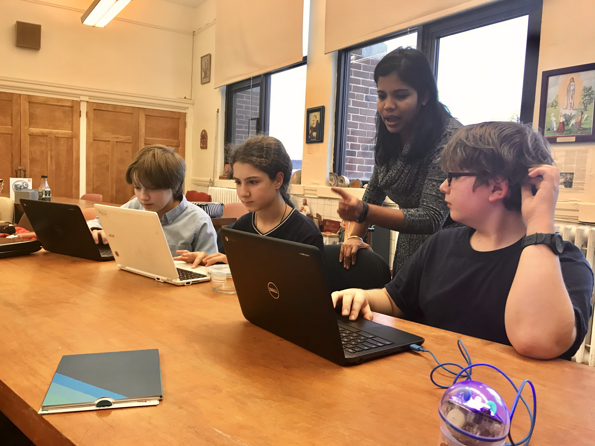
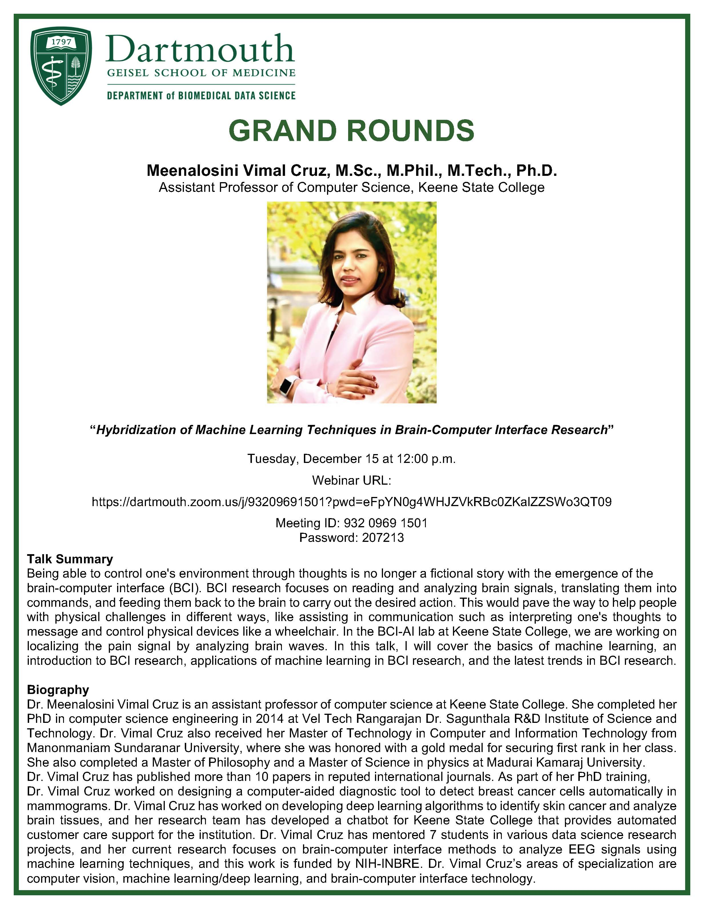
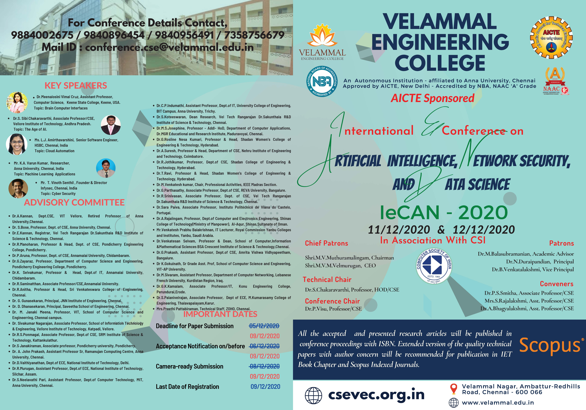
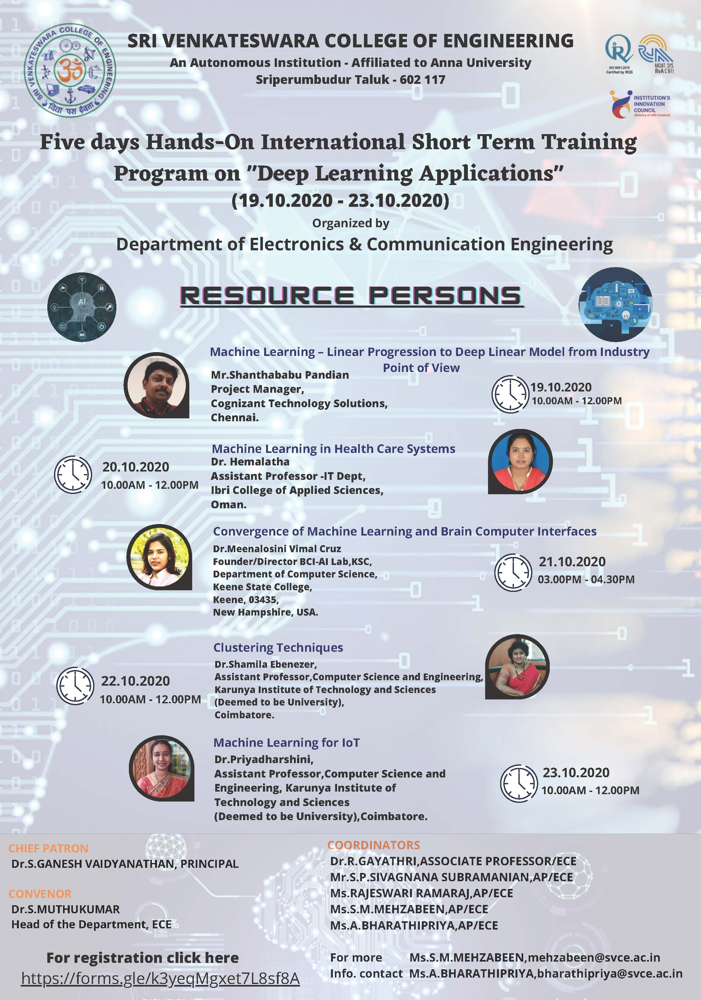
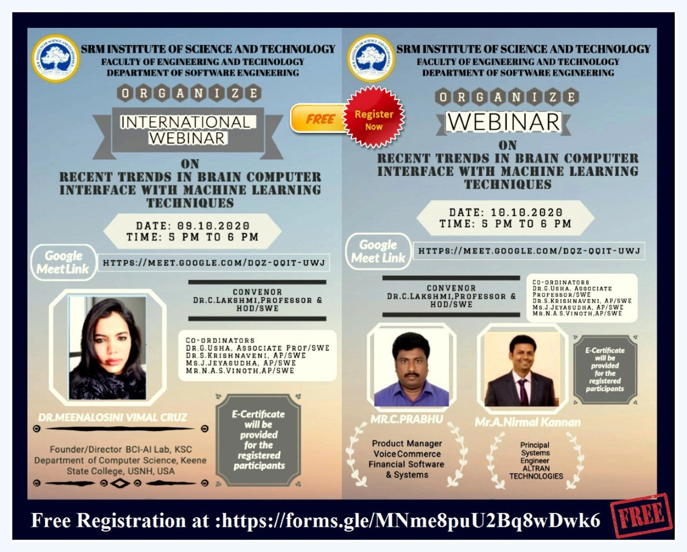
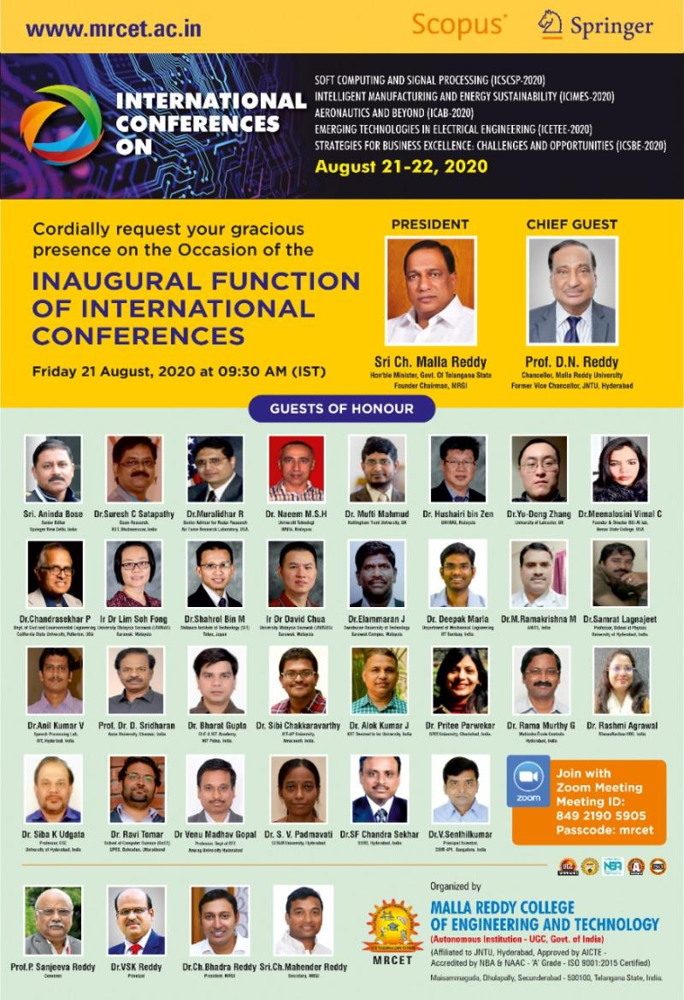

Services
Committee Participations
- IRB Board Member
- Teaching Innovative Studio Committee Member
- Virtual Task Force Committee Member
- CCR Advisory Board Member
- Assessment Committee Member, KSCSEA 2020
- Senate Curriculum Committee, 2018–19
Other Services and Activities
- Chatbot Development Developed a chatbot for Keene State College through AI research activity, which is automatic customer service software.
- Community Campaign To address the challenges we face with enrollment due to COVID-19, recorded a video sharing the learning experience of students who had a successful career at KSC, to motivate local high school students to join KSC.
-
Curriculum Development Contribution
- Data Analytics minor
- Bio-manufacturing curriculum initiatives
- Neuroscience curriculum initiatives
- CS-Club Co-Sponsor As a cosponsor for CS club, applied for external grant to facilitate hands-on Raspberry Pi projects for KSC CS club students and encouraged them to teach programming to middle school kids.
-
Departmental Services
- Developed three new courses in the Artificial Intelligence domain for the CS program
- Founded two new labs — Artificial Intelligence Lab (AIL) and Brain Computer Interface–Artificial Intelligence Lab (BCI-AI) — through research grants
- Advising 18 CS students; mentored 7 research students with internships
- Participating in the SSH poster event for three consecutive years, displaying student project work
-
Campus-Level Talk Organizations
- Organized free "cyber security" workshops with participant certificates
- Organized a campus seminar on "Global Impact of Artificial Intelligence" via the Global Speaker grant
- Organized guest lectures: Launching a Website in the Cloud · Impact of AI in Robotics · How to Write Secured Code
- Indian Paint Night Conducted an Indian Paint Night event through the diversity committee for the public and KSC students.
STEM Outreach Service
- Inaugurated and run a CS club in St. Joseph regional school (Keene) to teach programming to school kids through hands-on projects.
- Trained Keene middle school kids on Python programming and Raspberry Pi projects to participate in the middle school expo at KSC.
- Voluntarily taught programming to school kids with my research student, who received an outstanding volunteer award for this service.

Community Services
Participated and did dance performances in social events like:
- Keene International Festival
- Donation collection event for garland makers
- Indian ensemble choir performed by the Keene State College music department
Talks & Workshops Timeline
- Invited Talk Machine Learning in the Age of AI: Algorithms, Models & Beyond
- Invited Talk Advanced Approaches and Insights on AI and Deep Learning in Health Care
- Invited Talk Artificial Intelligence in Forensics
- Invited Talk Hybridization of Brain-Computer Interface and Artificial Intelligence
- Keynote Guest Speaker
- Invited Talk Resource Person — Recent Trends in Computer Science
- Invited Talk Brain-Computer Interface Research Perspectives
- Invited Talk Emerging Trends and Research Challenges in Deep Learning Applications
- Keynote Hybridization of Machine Learning Techniques in Brain Computer Interface Research
- Keynote Brain Computer Interface Techniques
- Invited Talk Deep Learning Applications
- Invited Talk Recent Trends in Brain Computer Interface with Machine Learning Techniques
- Invited Talk Current Trends in AI-BCI Technology
- Invited Talk Applications of Machine Learning in Medical Diagnosis
- Invited Talk Impact of Artificial Intelligence in Business and Health Care
- Workshop Cybersecurity Workshop
- Workshop Global Impact of Artificial Intelligence
- Invited Talk A Robust Automated Brain Tumor Segmentation Using NiftyNet
- Workshop Computer Vision Workshop
- Invited Talk Machine Learning Techniques on Medical Image Analysis
- Invited Talk Hybridizing Computer-Aided Diagnosis Techniques with Big Data
- Workshop Campus Guest Lecture Series
Talks & Events Photo Gallery

Talk - February 2022

Talk - March 2022

Talk - June 2022

Distinguished Lecture 2026

FDP Talk - December 2024

FDP Talk - May 2024

Dartmouth Workshop

Velammal Conference

SVCE Seminar

SRM Talk

ICSCSP Conference

VCANDO Event